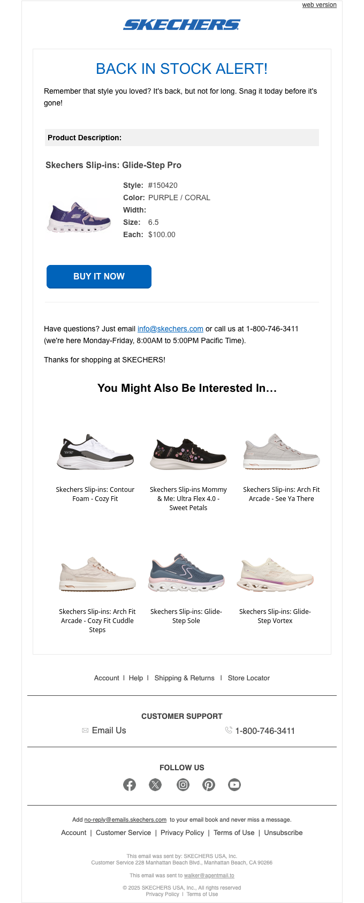

It's Back in Stock at SKECHERS.com
| From | SKECHERS <no-reply@emails.skechers.com> |
| Received | 2026-03-27 17:20 UTC |
| Score | 5/10 |
## Email Review: "It's Back in Stock at SKECHERS.com"
1. Executive Summary
This is a triggered back-in-stock alert for a specific product the recipient previously engaged with — functionally sound, but visually underperforming. The hero product gets no hero treatment: it's presented as a plain text spec sheet with no lifestyle or product imagery. The email relies entirely on intent (the customer already wanted this) rather than doing any selling. The recommendations module below the fold actually provides more visual interest than the main event, which is a structural inversion that undermines urgency.
2. Business Impact Score: **5 / 10**
The trigger is strong and high-intent. The execution wastes it.
3. What's Working
- Clear headline. "BACK IN STOCK ALERT!" is immediately scannable and purpose-driven.
- Urgency copy is present. "It's back, but not for long. Snag it today before it's gone" sets a time-pressure frame.
- Specific product details (style number, color, size) confirm to the customer this is the exact item they wanted — good for trust and relevance.
- Single, direct CTA. "BUY IT NOW" in a prominent blue button is unambiguous.
- Recommendations module. Six product thumbnails with names and prices give browsing options if the back-in-stock item doesn't convert.
4. What's Weak
- No product image for the hero item. The product that triggered this entire email — the Skechers Slip-ins Glide-Step Pro — is presented as a dry text block (style, color, size, price). There is no shoe photo. This is the single biggest miss in the email.
- Product description feels like a receipt, not an ad. The label-value format (Style / Color / Size / Price) reads like an order confirmation, not a product page. It doesn't reinforce why the customer wanted this shoe.
- No social proof or urgency reinforcement below the headline. After the opening line, urgency disappears. There's no "Only X left," low stock indicator, or similar.
- Recommendations dilute focus. Six alternates immediately below the CTA give the customer an easy off-ramp before they've committed to the primary conversion goal.
- Support section is text-dense and appears mid-email, breaking flow before the recommendations.
- "You Might Also Be Interested In" header is oversized relative to the hero section, making the recommendations feel more prominent than the hero product.
5. Recommendations
1. Add a product image. Show the shoe. It should be the first thing seen below the headline — large, clean, ideally on a white background or lifestyle shot. This is non-negotiable for a back-in-stock email.
2. Lead with the shoe, follow with specs. Image first, then name, then color/size confirmation, then price, then CTA. Mirror a product page, not a data table.
3. Add a scarcity signal. "Only a few left in your size" or a visual low-stock indicator below the product specs would convert the urgency copy into a tangible reason to act now.
4. Move support links to footer only. The mid-email customer support block interrupts the conversion path. It belongs in the footer.
5. Trim recommendations to 3. Six options is too many for a triggered alert. If you include alternates at all, keep it to a row of three and de-emphasize them visually.
6. Bottom Line
The hardest part of email marketing — earning a triggered send to a high-intent customer — is already done here. The execution doesn't match the opportunity. A product email with no product image is a critical gap. Fix that first, add scarcity copy second, and this email's conversion rate should improve meaningfully.
7. Evidence
Overall purpose: Triggered back-in-stock alert for a specific Skechers product (Slip-ins Glide-Step Pro, Purple, Size 9.5) the recipient previously browsed or saved.
Hero / primary value proposition: "BACK IN STOCK ALERT!" headline with urgency subtext. No product photography. Product is represented only by a spec table (style #, color code, size, price) and a blue "BUY IT NOW" button.
Membership / benefits section: None present.
Product discoverability / recommendation modules: "You Might Also Be Interested In..." section with two rows of three products — approximately six Skechers shoes with small images, names, and prices. Visually this is the most image-rich section of the email, which is a problem given it's secondary content.
Utility / secondary modules: Customer support block (email link + 1-800 number with business hours) appears mid-email between the CTA and recommendations. Follow Us section with five social icons precedes the footer. Standard footer with account/shipping/returns links and legal text.
Bugs / friction / clarity issues: No broken images or overlapping text detected. The core issue is not a bug but a design choice: the absence of product photography for the featured item is the most damaging visible element in the email.
## Technical Audit
## Technical Audit — "It's Back in Stock at SKECHERS.com"
From: SKECHERS <no-reply@emails.skechers.com> | Date: 2026-03-26
1. Technical Summary
The email is structurally sound with standard table-based layout and responsive breakpoints, but has three concrete issues: a missing plain-text fallback, mixed HTTP/HTTPS image sources, and missing alt text on two content images.
2. Link & Tracking Issues
- 26 tracking/redirect links routed through
click.emails.skechers.com— not probed (expected for SFMC click-tracking). No broken destination URLs confirmed. - Open pixel uses HTTPS:
https://click.emails.skechers.com/open.aspx?...— correct. - Krux/Salesforce DMP beacons present (3×
beacon.krxd.net), including a SHA-256 hashed UID match pixel and an ad impression pixel. These fire on open; no issue with implementation, but worth confirming DMP sync is still active for this campaign (campaignid=TRG_US_EN_BROWSEINSTOCK_1_03202025).
3. Rendering & Accessibility
HTTP image sources (3 images): All three content images are served over HTTP, not HTTPS. Clients that enforce mixed-content blocking (Outlook 2019+, some webmail) may suppress these images entirely.
| File | URL |
|---|---|
| Logo ("Skechers") | http://image.emails.skechers.com/lib/fe3115707564047a731c78/m/1/dde00662-169f-447d-b0e2-fc65f6c2290c.png |
| Content image | http://image.emails.skechers.com/lib/fe3115707564047a731c78/m/8/041c30ac-21db-494b-a892-bbdbf4984b2a.png |
| Content image | http://image.emails.skechers.com/lib/fe3115707564047a731c78/m/8/f9b5ed32-ceef-41a6-8701-c0e0121ca99c.png |
Missing alt text (2 images): The two /m/8/ content images have no alt attribute. If images are blocked, these render as blank spaces with no fallback text — a screen reader and images-off failure.
041c30ac-21db-494b-a892-bbdbf4984b2a.png—altmissingf9b5ed32-ceef-41a6-8701-c0e0121ca99c.png—altmissing
Responsive CSS: Two media query breakpoints defined (max-width: 480px, max-width: 640px) with appropriate overrides. user-scalable=0 on the viewport meta tag is a minor accessibility concern (prevents zoom on mobile) but is a common ESP pattern.
4. Personalization & Merge Tokens
No unresolved merge tokens (e.g., %%FIRSTNAME%%, {{name}}) visible in the truncated source. Preheader text is static: *"The Skechers you loved are back and selling fast! Get yours now."* — no personalization token errors detected.
5. Compliance
FAIL — Plain-text fallback: Text version is 0 characters. CAN-SPAM does not explicitly mandate a plain-text part, but its absence reduces deliverability scores across major spam filters (SpamAssassin, Postmark) and causes failures in some corporate gateways that require multipart/alternative MIME structure.
WARN — Authentication headers: SPF/DKIM status could not be confirmed via AgentMail relay headers. Sending domain emails.skechers.com is a dedicated subdomain (good practice), but authentication pass/fail must be verified in raw message headers before deployment. A DMARC failure on this subdomain would impact inbox placement.
Unsubscribe link presence is not confirmed in the truncated HTML — must be verified in the full source. CAN-SPAM requires a functional opt-out mechanism and physical mailing address.
6. Email-to-Site Continuity
UTM parameters on destination URLs cannot be confirmed without probing the 26 redirect links. Given SFMC click-tracking wraps all URLs, UTM attribution depends on correct parameter passthrough at the click.emails.skechers.com redirect layer. This should be spot-checked for at least one primary CTA.
7. Recommendations
| Priority | Issue | Action |
|---|---|---|
| High | Plain-text fallback missing | Add a plain-text MIME part in SFMC. Even a minimal version improves deliverability scores and ensures compliance with strict gateway filters. |
| High | HTTP image sources | Change all image.emails.skechers.com src values to https://. The CDN already supports HTTPS — this is a template authoring error. |
| Medium | Missing alt text on 2 images | Add descriptive alt attributes to both /m/8/ images. Use empty alt="" only for purely decorative images. |
| Medium | SPF/DKIM authentication unverified | Confirm authentication headers on a seed send before deployment. Verify DMARC policy covers emails.skechers.com. |
| Low | user-scalable=0 on viewport | Consider removing or replacing with user-scalable=yes to allow accessibility zoom on mobile. |
| Low | UTM passthrough | Spot-check one CTA redirect to confirm UTM params are present on the landing page URL. |

Automated QA
Deliverability
| ✘ | Plain-text fallback missing or too short | Text version is 0 chars |
| ⚠ | Authentication-Results header not found | Expected via AgentMail relay — SPF/DKIM status unknown |
Info
| ⚠ | 26 tracking link(s) skipped | Tracking/click-redirect domains — skipped HTTP probe |
| ⚠ | Image uses http://: "Skechers" (dde00662-169f-447d-b0e2-fc65f6c2290c.png) | Non-HTTPS source may be blocked — src: http://image.emails.skechers.com/lib/fe3115707564047a731c78/m/1/dde00662-169f-447d-b0e2-fc65f6c2290c.png |
| ⚠ | Image missing alt text: 041c30ac-21db-494b-a892-bbdbf4984b2a.png | src: http://image.emails.skechers.com/lib/fe3115707564047a731c78/m/8/041c30ac-21db-494b-a892-bbdbf4984b2a.png |
| ⚠ | Image uses http://: 041c30ac-21db-494b-a892-bbdbf4984b2a.png | Non-HTTPS source may be blocked — src: http://image.emails.skechers.com/lib/fe3115707564047a731c78/m/8/041c30ac-21db-494b-a892-bbdbf4984b2a.png |
| ⚠ | Image missing alt text: f9b5ed32-ceef-41a6-8701-c0e0121ca99c.png | src: http://image.emails.skechers.com/lib/fe3115707564047a731c78/m/8/f9b5ed32-ceef-41a6-8701-c0e0121ca99c.png |
| ⚠ | Image uses http://: f9b5ed32-ceef-41a6-8701-c0e0121ca99c.png | Non-HTTPS source may be blocked — src: http://image.emails.skechers.com/lib/fe3115707564047a731c78/m/8/f9b5ed32-ceef-41a6-8701-c0e0121ca99c.png |